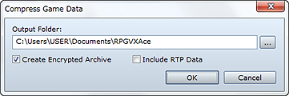
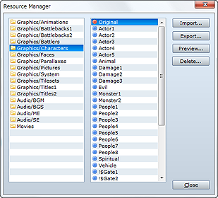
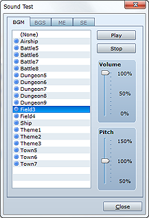
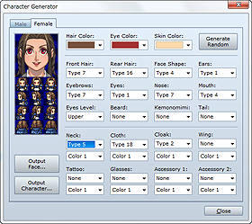
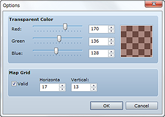
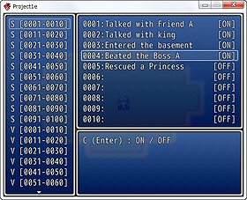
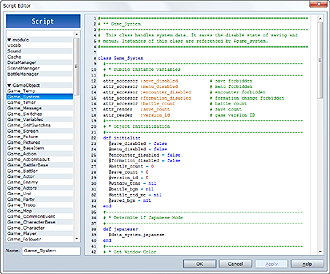
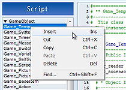
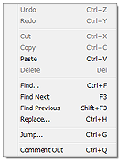

Save project content into a compressed file by selecting Compress Game Data on the File menu. This is handy when you want to distribute your completed game. In the Output Folder box, specify where you want to saved the compressed file.
Enabling Create encrypted archive when saving encrypts your project content to keep it safe from prying eyes. To compress your project along with RTP data, enable the Include RTP data option. This will eliminate the need to download RTP data to play the game, but please note that it will markedly increase the file size.
Note that the Compress Game Data command may fail with game projects exceeding approximately 2 GB.*
*This value is merely a guideline. It will vary depending on the PC hardware and OS you are using and the game you are creating.

The Manage Resources dialog box displayed by selecting Manage Resources on the Tools menu is for managing the resource files included in your project. The various parts of the dialog box and the functions of its buttons are described below. Note that in order to use your own images, music, and other files to create a game, they must be in one of the designated standard formats. See Resource Standards for more information.
A list of folders containing resource files is displayed here. To import a resource file into your project, specify the folder where it is located.
A list of files located in the folder selected in the folder list is displayed here. A red circle before a file name indicates a resource file that was imported into RPG Maker, while a blue circle indicates a resource file that is included in the RTP.
Imports a resource file into your project. In the folder list, select the folder you want to import the resource file into, click the Import button, and then specify the target resource file. When importing an image, left-clicking assigns a transparent color and right-clicking assigns a translucency color.
Saves a project resource file outside of the project. In the file list, select the file you want to export, click the Export button, and then specify the save location. Resource files you export in this manner will remain within the project. Note that you can select multiple resource files in the file list by drag-selecting and then export them all at once.
Displays the image contained in the graphics resource file selected in the file list. To check an audio file, use the Test Audio tool.
Deletes from the project the resource files selected in the file list. You cannot delete standard RTP resource files (those with a blue circle in front of their name). Note that deleted files cannot be recovered, so make sure you really want to delete the selected files before proceeding.

The Test Audio dialog box displayed by selecting Test Audio on the Tools menu is for managing the audio files included in your project. Audio playback continues even after you close the dialog box, allowing you to use this command to play music while you create your game.
The dialog box contains tabs for four different types of audio: BGM (background music), BGS (background sounds), ME (music effects), and SE (sound effects). Click the tab for the type of audio file you want to test and then select a file from the list. The selected audio file will start playing when you click the Play button. To stop playback, click the Stop button.
Use the Volume control to adjust the playback volume between 0% and 100% and the Pitch control to adjust the pitch between 50% and 150%.

The Generate Characters dialog box displayed by selecting Generate Characters on the Tools menu is for easily creating character images that you can assign to actors and events.
Start by clicking the Male or Female tab, depending on the gender of the character you want to create. Next, select the various available parts using the settings provided for the character's face, clothing, and so on. Clicking the Random button randomly specifies the parts to use.
Changing the setting of any part automatically applies the change to both face graphic and walking graphic as a general rule. However, there are some cases where one of the graphics may not change depending on the part.
When the image is complete, you will save it as an image file. Click the Output Face button or Output Character button, and in the dialog box that appears, enter a file name, and then click the Save button. Note that if you save the file in the Face or Character folder, which are the standard locations specified for saving the respective type of image, there will be no need to separately import it into your project using Manage Resources.

The Options tool that appears when you select Options on the Tools menu is for changing settings related to image transparency and grid display in the editor. These settings have no effect on game play.
Set the color to use for the part of a graphic set to Transparent. Use the Red, Green, and Blue slider bars to specify the color to display. Transparent parts of the graphic will be displayed with a checkerboard pattern that uses the specified color.
Set whether to display a grid in map view (map editing mode). To display a grid, select the Valid check box and then specify the grid interval in Horizontal and Vertical using a value between 2 and 100 tiles.

The Play Test command executed by selecting Play Test on the Game menu allows you to immediately start testing the game you are creating. Use it to check whether settings and events are operating as you would expect from the final distributable version of the game.
Pressing the F9 key during play testing displays the debugger window. This window allows you to change the values of switches and variables for the currently displayed portion of the game.
To change a value, select the desired switch or variable from the list on the left side of the window ("S" indicates a switch and "V" a variable, while the numbers show the valid range), press the indicated key to confirm, and then move the cursor to the desired switch/variable in the list on the right side. For a switch, use the indicated key to turn it on/off, and for a variable, use the left and right cursor or the L and R keys to change its value.
You cannot edit your game during play testing. To exit play testing, click the close box (×) in the upper right corner of the window. You can also exit by pressing Alt+F4 or selecting Shut Down on the game's menu.
The simple programs that control game execution are known as scripts.
Generally, commands such as Show Text are referred to as scripts, but in this application, the word script is reserved for code that is more complex than event commands and almost to the level of an actual program. All event commands are interpreted and executed at the script level, rather than by the application itself.
Script editing is a feature for advanced users to employ in customizing the game system. As such, it has a high level of difficulty. However, there is no need to learn how to use it if you will create your game the normal way. We recommend creating your first game without worrying about scripts. Once you are more experienced with RPG Maker and feel that the default system leaves something to be desired, it will be time to try your hand at scripting.
RPG Maker uses the Ruby programming language, a proven scripting solution, as its scripting engine. The official website for Ruby is http://www.ruby-lang.org/.
Ruby is freeware developed primarily by Yukihiro Matsumoto. It offers the performance necessary for writing large-scale games. However, as it was originally designed for text processing and similar applications, it is rather difficult to use for game development as is. That is why the Ruby Game Scripting System (RGSS) was developed especially for games. See the RGSS Reference for more information.

Selecting Script Editor on the Tools menu displays a large dialog box for editing scripts.
Since running a large game application such as an RPG requires a large number of programs, the entire game needs to be divided up into an appropriate number of subunits. This application refers to such subunits as sections. The list on the left side of the Script Editor dialog box displays the game's sections.
The Script Editor was designed to be controlled just like the game's database. Pressing the F4 and F5 keys enables one-touch selection of the previous section and next section, respectively, just as with the database. In addition, the F6 key copies the term where the cursor is as the section name.

Right-clicking a section name displays the shortcut menu. Selecting Insert here inserts a new empty section before the selection position. Similarly, using commands such as Cut and Paste allows you to change section order.
Unlike the database, sections are not managed using IDs. Sections are executed in the order they are listed (top to bottom). Preset scripts include a section called "Main" at the very bottom, and actual game operation does not begin until all the various types of definitions have been made.

Right-clicking in the text editor area on the right side of the window displays the shortcut menu shown in the figure to the right. The menu contains a variety of basic editing commands, including Cut, Paste, Find, and Replace.
Shortcuts key combinations such as Ctrl+F and Ctrl+G work even when the text editor is not in focus.
To search for text in all sections, not just the one you are editing, select Find on the section shortcut menu. The shortcut key combination for this is Ctrl+Shift+F.
In addition to directly editing scripts in the Script Editor, you can also use them in the following four ways:
For example, you could use scripts in the above-mentioned ways to call an event command you added with the Script Editor. The fun and interesting ways you can use scripts is limited only by your imagination.